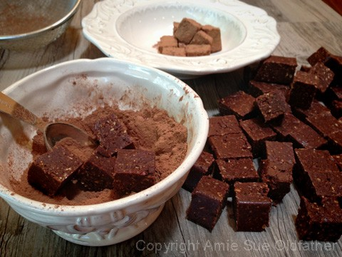

Jitter Java Zombie Brownie Bites

~ raw, vegan, gluten-free ~
Do these brownie bites cause the jitters? No. Do these brownies contain java (coffee)? Nope. Do these brownies contain zombies in them? Nada! Well, what the heck then?
I refer to these brownie bites as Jitter Java Zombie Brownie Bites because they are energy giving for those times when you are walking around feeling depleted, like a walking zombie, and needing a little extra bounce in your step. Ever have those days? I sure have. The recipe does contain coffee flavoring, that is where the java comes into play.
So, where does the “energy” come from? Raw cacao! Which gives you high nutrient energy to get or keep you going. Cacao is full of antioxidants and minerals that enhance both physical and mental well-being. The majority of these antioxidants are water-soluble, and when the fat is removed from the cacao bean, the ORAC (Oxygen Radical Absorbance Capacity) scores almost double!
But raw cacao is not going to get all the glory here. Oats! Oats contain the energizing and stress-lowering B vitamin family, which helps transform carbs into usable energy. Oats are also low on the glycemic index because they have a lot of fiber. That means that your body gets a steady stream of energy, as opposed to a short-term spike, because the carbohydrates gradually flow into your bloodstream.
And let’s not forget Medjool dates… they provide “good carbs,” rating low to low/medium on the Glycemic Index (GI). A diet rich in low-GI carbs keeps your blood sugar stable, helping maintain a healthy weight and ensuring that you enjoy sustained energy without the crash you can get from snack bars and processed foods.
All of that bundled up in such a small treat! Enjoy!
Ingredients:
yields 36 cubes
- 1 1/4 cup rolled, gluten-free oats, soaked & dehydrated
- 1 1/4 cups almond flour
- 6 Tbsp raw cacao powder
- 1/4 tsp Himalayan pink salt
- 1/4 cup raw cacao nibs
- 1 cup Medjool dates, pitted
- 1/4 cup water
- 3/4 cup dried figs
- 1/2 cup coconut butter, softened
- 1 tsp coffee extract
Preparation:
- Be sure to use dry oats in this recipe. Otherwise, the wet oats will add too much moisture to the batter.
- In a food processor, process the oats, almond flour, cacao powder, and salt until no large pieces remain — place in a bowl. Then mix in the cacao nibs.
- In the same food processor bowl, combine the dates, water, figs, coconut butter, and coffee extract. Process until the mixture is mostly smooth.
- Add the dry ingredients into the food processor and process until thoroughly combined. The batter will stick together in a large ball.
- Line a baking pan or cookie sheet with plastic wrap and press the mixture evenly into the pan. I used the lip of my pan as my guide, which was 3/4″ high.
- Place in the fridge or freezer to chill.
- Remove and cut into small squares. Coat with the cacao powder and enjoy!
- These should last a week on the counter or longer in the fridge or freezer.
The Institute of Culinary Ingredients™
- Dates are a fantastic ingredient for raw food recipes, click (here) to read why.
- What is raw cacao powder?
- What is Himalayan pink salt, and does it matter? Click (here) to read more about it.
- Is coconut butter the same as coconut oil? Click (here) to find out.
- Are oats gluten-free? Yes, read more about that (here).
- Are oats raw? Yes, they can be found. Click (here) to learn more.
- Do I need to soak and dehydrate oats? Not required but recommended. Click (here) to see why.
- Learn how to grind flaxseeds for ultimate freshness and nutrition. Click (here).

© AmieSue.com